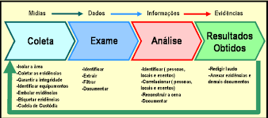

Períto Digital Fabiano
"Não há crime perfeiro, todo delíto deixa rastros, basta observar com olhos de períto"
Com o advento da tecnologia e a extrema importância que a mesma exerce nos negócios e no meio social, surge a necessidade
de novos meios de segurança, tendo em vista o exponencial aumento nos casos de fraudes, roubos e sequestro de dados.
Após a aprovação da Lei Nº 13.709 de 14 de agosto de 2018,
Lei Geral de Proteção de Dados - LGPD as organizações se depararam com uma nova realidade, adquar-se as
exigencias impostas pelas novas normas, podendo, as mesmas, sofrerem penalidades e multas pelo não cumprimentos previstos pela nova lei.
De acordo com a LGPD, a qual teve embase na RGPD - Regulamento Geral de Proteção de Dados em vigor na UE - União Européia, a mesma preve multa de 2% do faturamento da organização a um teto de 50 milhões para as empresas que não cumprirem com o estabelecido por lei no tratamento de dados pessoais
Este é um este é um texto em negrito
Este é um este é um texto em itálico
Este é um este é um texto com marcação em amarelo
Este é um este é um texto com a tag small, texto menor que o normal
Este é um este é um texto riscado, substituido
Este é um este é um texto sublinhado que foi inserido
Este é um este é um texto subscript abaixo da linha normal
Este é um este é um texto superscript ciam da linha normal
farlauSystem